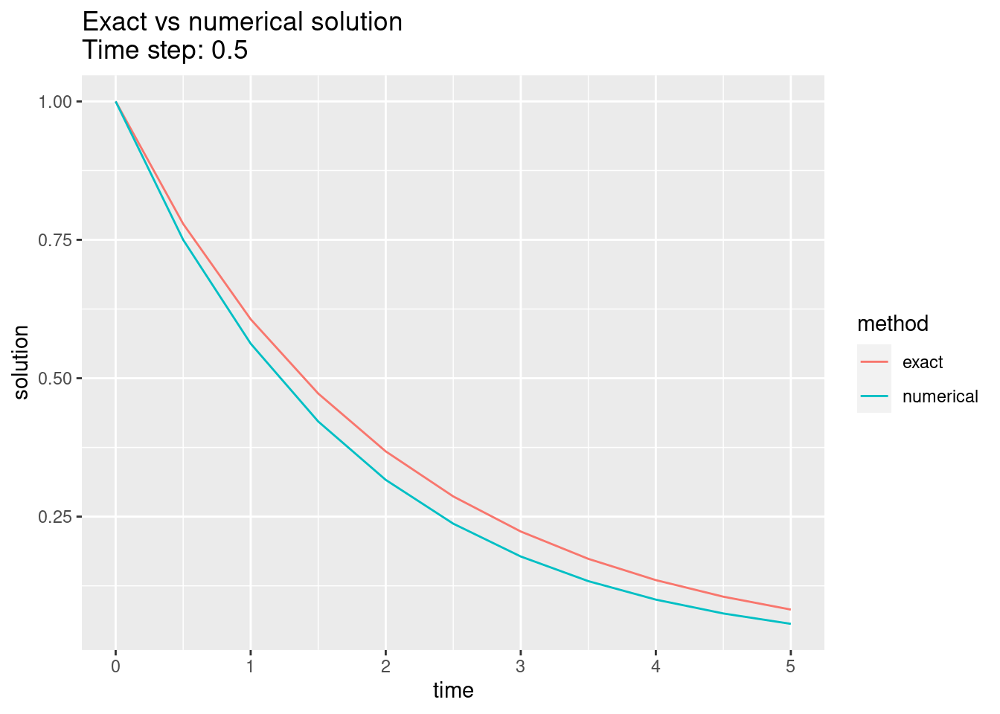

# libraries
library(dplyr)
library(tidyr)
library(ggplot2)
# Function that performs Euler's method on a univariate function
euler <- function(h,fun,y0 = 0,t0=0,tn=1,...){
times <- seq(t0,tn,by=h)
if(times[length(times)]!=tn){
times <- c(times,tn)
}
res <- data.frame(n = 1:length(times),
tn = times,
yn = y0,
fn = fun(t0,y0,...))
for(k in 2:nrow(res)){
res$yn[k] <- res$yn[k-1] + h*res$fn[k-1]
res$fn[k] <- fun(res$tn[k],res$yn[k],...)
}
return(res)
}
# ODE
ode_ex1 <- function(t, y, mu){
return(-mu*y)
}
sol_ex1 <- euler(h = 0.5,
fun = ode_ex1,
y0 = 1,
t0 = 0,
tn = 5,
mu = 1/2)
sol_ex1 <- sol_ex1 %>% mutate(exact = exp(-tn/2),
numerical = yn)
sol_ex1 %>% pivot_longer(cols = c('exact','numerical'),
names_to = 'method',
values_to = 'y') %>%
ggplot(aes(x=tn, y=y, col = method)) +
geom_line() +
ggtitle('Exact vs numerical solution\nTime step: 0.5') +
xlab('time') +
ylab('solution')